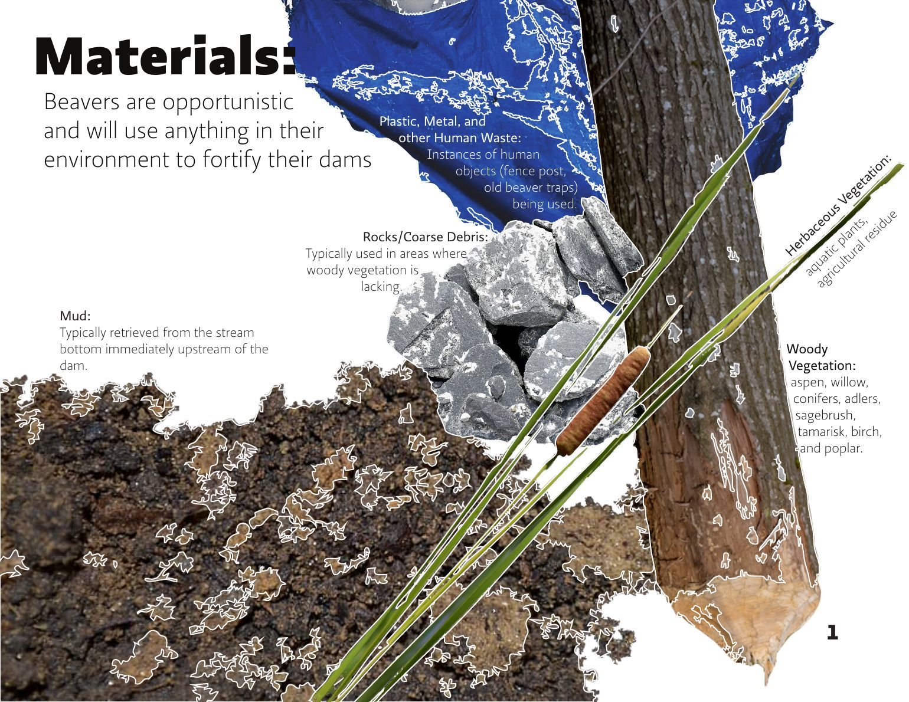
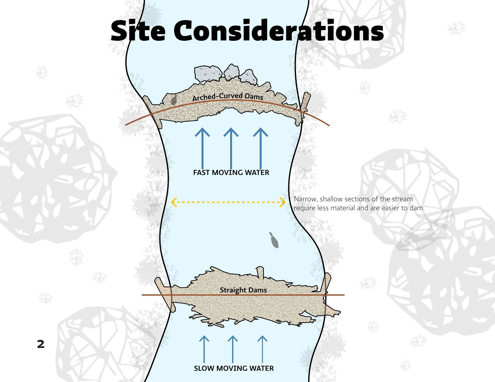
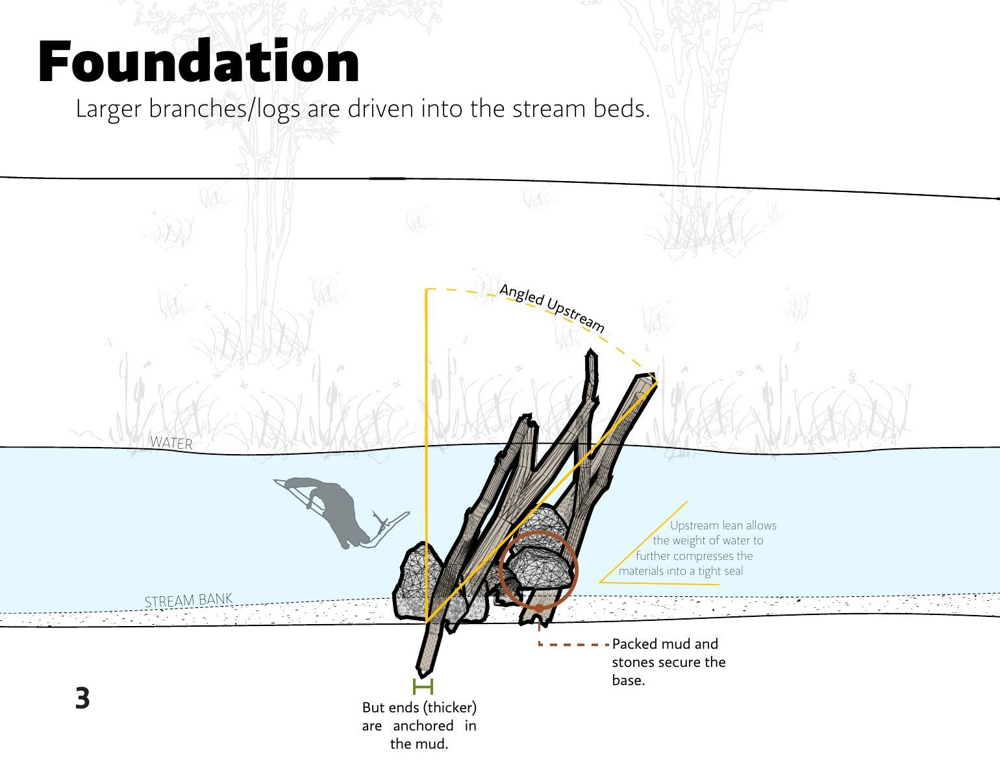

ArtD 326 · University of Illinois Urbana-Champaign · 2025
Genealogy of a Beaver Dam
A construction manual for a building made by beavers: its materials, site, foundation and walls, drawn the way you'd document human architecture.
The story
The assignment was a genealogy of a device: trace where its parts come from, the way a smartphone battery is mined in one country and assembled in another. It assumed the maker is human, *homo faber*.
I wanted to push back on that. There are builders in the more-than-human world too, so I traced a beaver dam instead. The booklet documents it like architecture: what it's made of and where each material comes from, how a site is chosen, how the foundation is set, and how the walls go up.
It grew out of the same semester's beaver research as Beaver's Burden, and it goes back to Paraguay, where a structure built to protect people didn't account for anything else living in the river.
What I did
- Researched beaver dam construction and designed a five-page illustrated booklet
- Modeled the stream and dam foundation in Rhino and layered the renders with collage and hand sketches in Illustrator
Process
- Materials: beavers are opportunistic. Mud comes from the stream bottom just upstream; rocks and coarse debris stand in where woody vegetation is scarce; the wood is aspen, willow, conifers, alders, sagebrush, tamarisk, birch and poplar; herbaceous and aquatic plants and agricultural residue fill in; so do human leftovers like fence posts and old beaver traps.
- Site: narrow, shallow stretches take less material. Fast water gets an arched, curved dam; slow water, a straight one.
- Foundation: larger branches and logs are driven into the streambed, thick ends anchored in mud, leaning upstream so the water's weight compresses the materials into a tight seal. Packed mud and stones secure the base.
- Raising the walls: sticks, twigs, plant matter and mud are piled on the foundation's upstream face. The current pulls material into the gaps, sealing leaks on its own. The wall is wide at the base and tapers toward the top, raising the waterline.
Outcome
- Five-page illustrated booklet (8.5 × 11 in), May 2025
Reflection
Builders aren't only human. Documenting a beaver's dam with the same drawing conventions as a building was a way to give its maker the same standing.
Drawings


